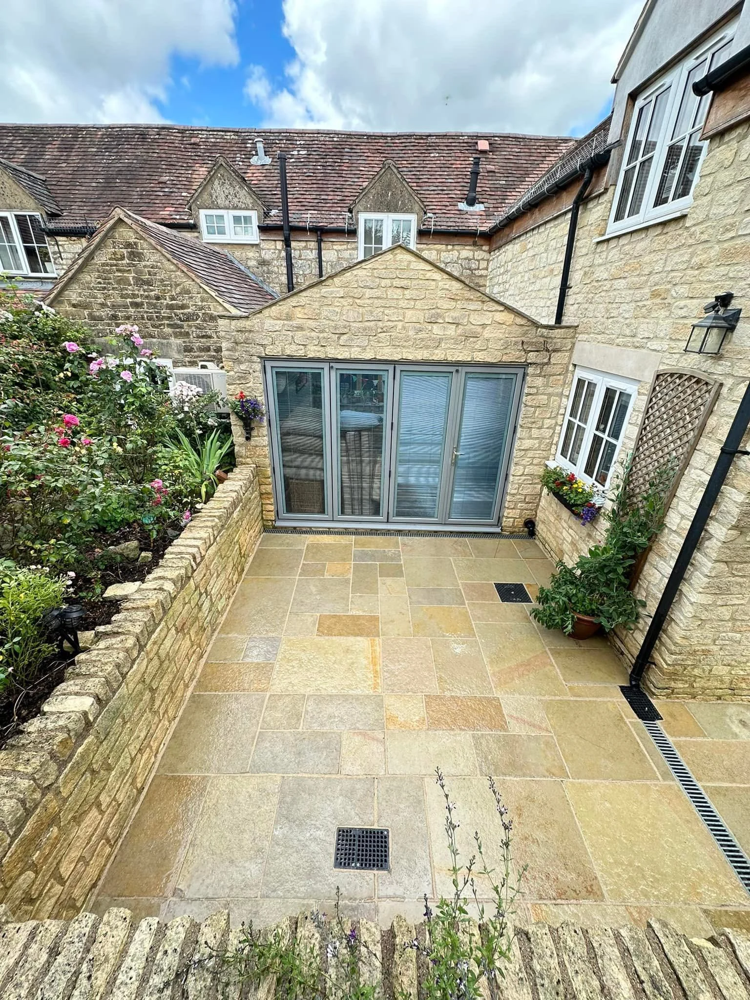
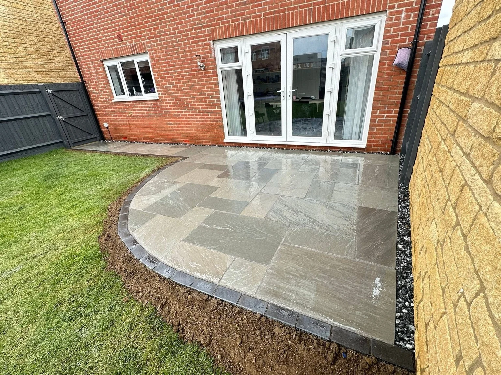

GLOUCESTER · GARDENS & DRIVEWAYS
Your outdoors.
A fresh perspective.
A patio to unwind on. A driveway to come home to. A garden that feels like yours. Explore our paving, fencing and landscaping projects.
O.K GARDEN, LANDSCAPING & DRIVEWAYS
Built around
your outside space.
From the curve of a patio edge to a clearly defined path, the details help bring an outdoor space together.
Based in Gloucester, O.K Garden takes enquiries for patios, driveways, fencing, artificial turf and hard landscaping. Share your priorities, photographs and approximate dimensions to discuss the possibilities.
Tell us about your project →

BEFORE & AFTER · DRIVEWAY
A different
way home.
Follow this driveway from preparation to the finished dark surface, with contrasting block edging and a matching side route. Tap either photograph for the complete view.
Explore driveways →OUR WORK · THE DETAILS
Stone. Shape. Possibility.
Different spaces, materials and finishes. Tap any image to open it large.
BEFORE & AFTER · PATIO
A fresh setting for sitting out.
The same covered seating area, with the original paving replaced by a multi-toned sandstone patio.
See the original garden overview
A GARDEN THAT WORKS TOGETHER
Room for a little more green.
Artificial turf, gravel and stone paths define the garden. Timber fencing gives the space its boundary.

YOUR PROJECT, STEP BY STEP
A clear place
to start.
O.K Garden, Landscaping & Driveways specialises in patios, driveways, fencing, artificial turf and hard landscaping in Gloucester.
Send photographs, approximate measurements and your postcode.
Discuss materials, the layout, existing surfaces and access.
Confirm the scope, quotation and availability before booking.
LOCAL OUTDOOR PROJECTS
Based in Gloucester.
Include your postcode with your enquiry so coverage and availability can be confirmed for your property.
LET’S TALK ABOUT YOUR SPACE
What have you
got in mind?
Tell us about your project. This form opens WhatsApp with your enquiry ready to review and send. Add photographs in WhatsApp.
Useful details include the size, preferred finish, existing surface and any access restrictions.
Your details are shared only when you send the message. Privacy information.GOOD TO KNOW
A few answers.
Which services do you offer?
Patios, driveways, fencing, artificial turf and hard landscaping. Share your project details to discuss the work.
Where are you based?
Gloucester. Include your postcode to confirm coverage and availability for your property.
What should I send for a quote?
Overview photographs, approximate measurements and a description of the result you would like. Include your postcode and any access restrictions.
Can I see your work in more detail?
Yes. Tap any gallery photograph to open the complete image in a larger viewer. Use the close button or Escape to return.
Can I discuss materials and layouts?
Yes. Send examples of finishes you like, along with photographs of the existing space, so the options can be discussed.
How do I contact you?
Call 07449 126106 or use WhatsApp. The enquiry form prepares a message for you to review and send.
O.K GARDEN · GLOUCESTER
Let’s make more
of your outdoors.
Tell us what you have in mind. Send photographs, your postcode and a few details to start the conversation.